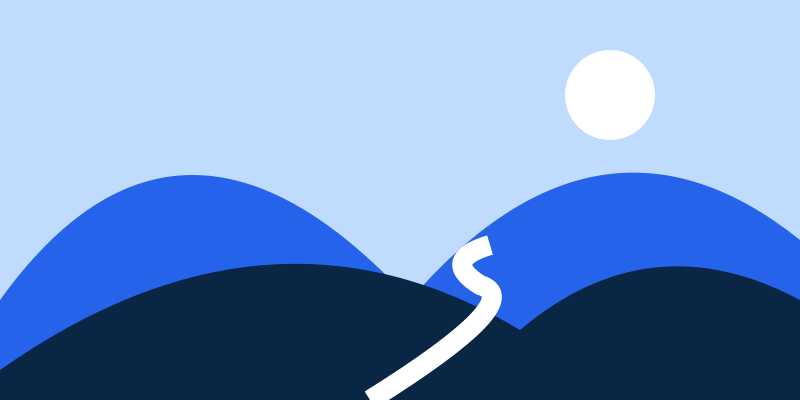

Explore how accessibility preferences change your experience. Read a story, play a clip, try a sample form, and find the combination that works for you.
Sustainable learning begins with deliberate observation. By noticing unfamiliar details in an everyday environment, we create opportunities for reflection and develop confidence through incremental experimentation.
Choose one ordinary object near you. Notice its shape, texture and purpose. There is no single right answer. A useful question is often more valuable than a quick answer.
Compare continuous movement with a one-time transition. Start the examples, open the motion settings, then close the panel to see the result.
Animations are stopped until you start them.
01 · CONTINUOUS ROTATION
A turning shape
Pause Animations freezes the shape. Turn pause off to resume. Reduce Motion removes repeated spinning.
02 · SLIDING CONTENT
Cards in motion
ReadListenExplore
Pause Animations stops the sliding cards at their current position. Reduce Motion keeps them still.
03 · ONE-TIME TRANSITION
Reveal a message
Small changes can make the web feel calmer.
Try Show/Hide with Reduce Motion on: the message changes immediately, without the expanding transition.
Use one setting at a time to compare: Pause freezes ongoing animations; Reduce Motion removes animation and transition movement. These examples contain no flashing. Your device’s reduced-motion preference is respected.
FLASHING CONTENT PROTECTION TEST
A blinking button
Click Start blinking, then turn Flashing Content Protection on to pause the button. Turn protection off to resume. Click the button again to stop the sample.
A gentle moving marker
Start the motion, then try the separate Pause Animations or Reduce Motion controls.
This sample does not flash. Flash detection may report no rapid flashing here; video flashes cannot be guaranteed detectable.
Autoplay comparison
Start this muted looping player, then enable Stop Auto-Playing Media.
LOCAL DEMO SESSION
A little more time
This countdown belongs only to the Use AccessEase page. Extending it does not change a real account or server session.
Open Extend Session Time and request 5 more minutes. Watch this counter increase.
Turn Image alternative text on to show the image description below the photo. Turn it off to hide the description.
A correctly described image

Use Image Alternative Text to inspect the supplied description.
Include intentionally incomplete audit samples
These samples contain an image with no alt text and an input with only a placeholder, for the page audit to find.
A useful heading outline
Open Accessible Headings and Landmarks to navigate this page. Screen Reader Compatibility and Accessible Form Labels inspect the actual markup.
06 · YOUR COMPLETE CHECKLIST
Find a setting. Try a change.
50 settings
Each item opens its matching setting. Close the panel to compare the sample. Use Reset all settings between comparisons. Samples and the local session timer have their own reset controls.